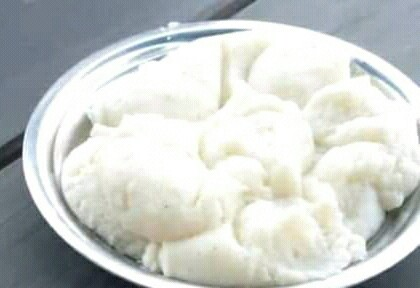

Nshima Recipe

Nshima is the staple food in Zambia and is enjoyed by almost every household.
To prepare it, you wil need;
Ingredients
Step by step instructions on how to prepare
- Heat some water until it boils.
- Make a paste by adding 1/2 cup of mealie meal and 1 cup of water.
- Fill 3 quaters of hot water in a pot and add the paste.
- Reduce the heat and stir.
- Cover the pot and let it cook for 15 minutes.
- After it cooks, start addind mealie meal and stiring vigorously until it thickens.
- Cover the pot for about three minutes.
- Stir vigorously again for a minute.
- Your nshima is ready to eat.
- Serve with your favourite relish like vegetables, beef, stew ,fish, etc.
Tip
When the nshima starts to cook after mixing hot water and the paste, it may overflow So cover the lid half way.
Can be enjoyed with Beef stew